Candidate List 20260708Last night — ZTF: 3,629 passed basic cuts (102 young) · LSST: 0 passed basic cuts (0 young)Previous Day Next Day
Section 1: New Sources (age<1d) Section 2: Old (1-5d) sources observed last nightplaceholder
Section 1: New Afterglow/FBOT Cands Last Night (2)
1. [ZTF] ZTF26abfonnz (Afterglow?) [Back to Top] [Share] [Trigger Swift] [Fritz Alert] [Fritz Source] [Lasair]RA, Dec: 265.33144, 10.82921 17h41m19.55s, 10d49m45.16sGalactic (l, b): 34.90885, 20.42236 ext(g-r) = 0.172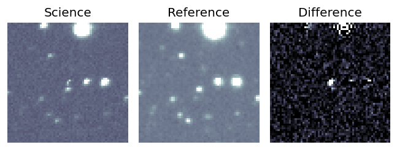
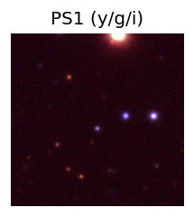
TESS: Sectors 118
PS1: 0 sources in 3 arcsec
LegacySurvey: 0 sources in 3 arcsec
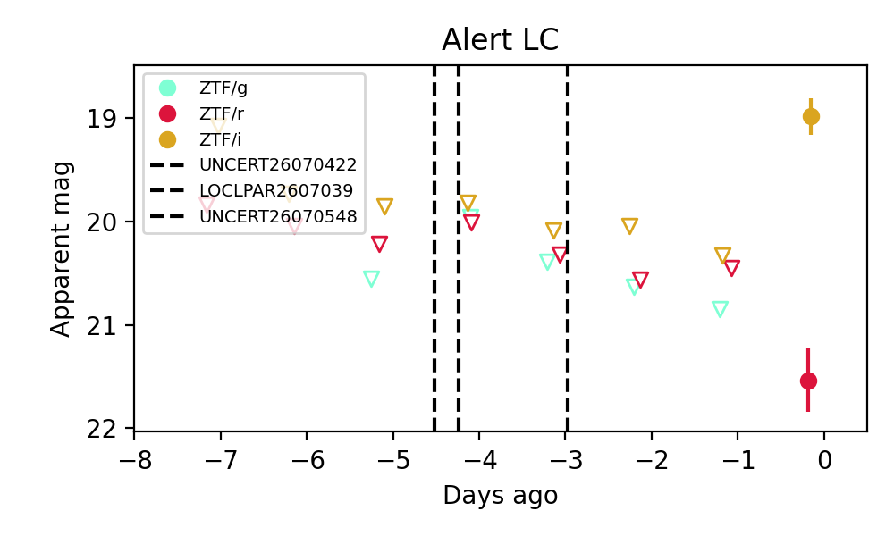
Extinction-corrected ri color:
From alerts: 2.46 +/- 0.35 mag
Consistent with synchrotron, g-r>0!
Rise Rate:
i: 1.32 mag/day
Fade Rate:
2. [ZTF] ZTF26abfopxp (Afterglow?) [Back to Top] [Share] [Trigger Swift] [Fritz Alert] [Fritz Source] [Lasair]RA, Dec: 269.7563, 9.53354 17h59m1.51s, 9d32m0.74sGalactic (l, b): 35.64153, 15.93227 ext(g-r) = 0.178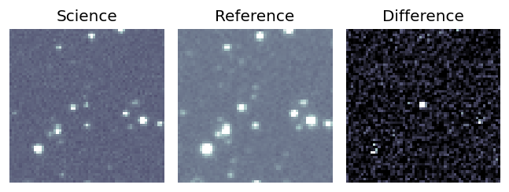
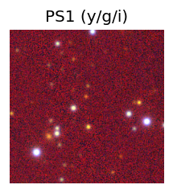
TESS: Sectors [ 80 118]
PS1: 1 source in 3 arcsec Closest: d = 3.40 arcsec photoz=0.28+/-0.14 peak abs mag = -21.65
LegacySurvey: 0 sources in 3 arcsec
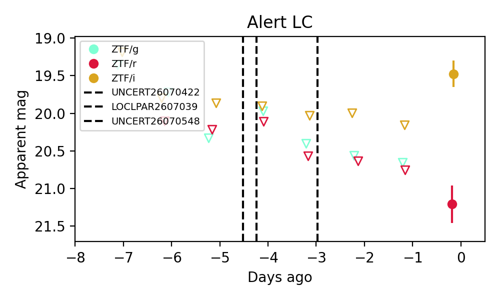
Extinction-corrected ri color:
From alerts: 1.64 +/- 0.31 mag
Consistent with synchrotron, g-r>0!
Rise Rate:
i: 0.67 mag/day
Fade Rate:
Section 2: Older Sources Observed Last Night (17)
0. [ZTF] ZTF26abemkvx (Afterglow?) (TNS: 2) [Back to Top] [Share] [Trigger Swift] [Fritz Alert] [Fritz Source] [Lasair]RA, Dec: 289.2679, 46.38841 19h17m4.30s, 46d23m18.26sGalactic (l, b): 77.6813, 15.16671 ext(g-r) = 0.098


TESS: Sectors [ 14 15 40 41 53 54 55 74 75 80 82 119 120]
PS1: 0 sources in 3 arcsec
LegacySurvey: 0 sources in 3 arcsec

Extinction-corrected gr color:
From alerts: -1.94 +/- 99 mag
Rise Rate:
r: 2.53 mag/day
Fade Rate:
g: 0.18 mag/day
r: 2.89 mag/day
1. [ZTF] ZTF26abeyiuz (Afterglow?) [Back to Top] [Share] [Trigger Swift] [Fritz Alert] [Fritz Source] [Lasair]RA, Dec: 217.99833, 10.08884 14h31m59.60s, 10d 5m19.82sGalactic (l, b): 2.01249, 60.82185 ext(g-r) = 0.031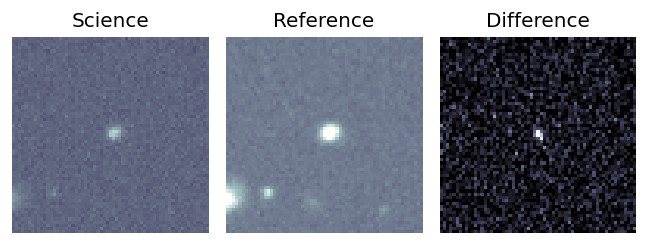
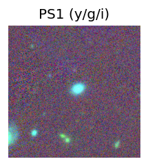
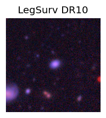
TESS: Sectors [50 51]
SDSS (<15 kpc):Found SDSS phot-z: z=0.10; peak abs mag = -19.05
PS1: 0 sources in 3 arcsec
LegacySurvey: 1 sources in 3 arcsec Closest: d = 1.57 arcsec, 296.0 deg (east of north) photoz=0.1 (68% bounds 0.07, 0.11), type=EXP peak abs mag = -18.96 (68% bounds -18.22, -19.18)
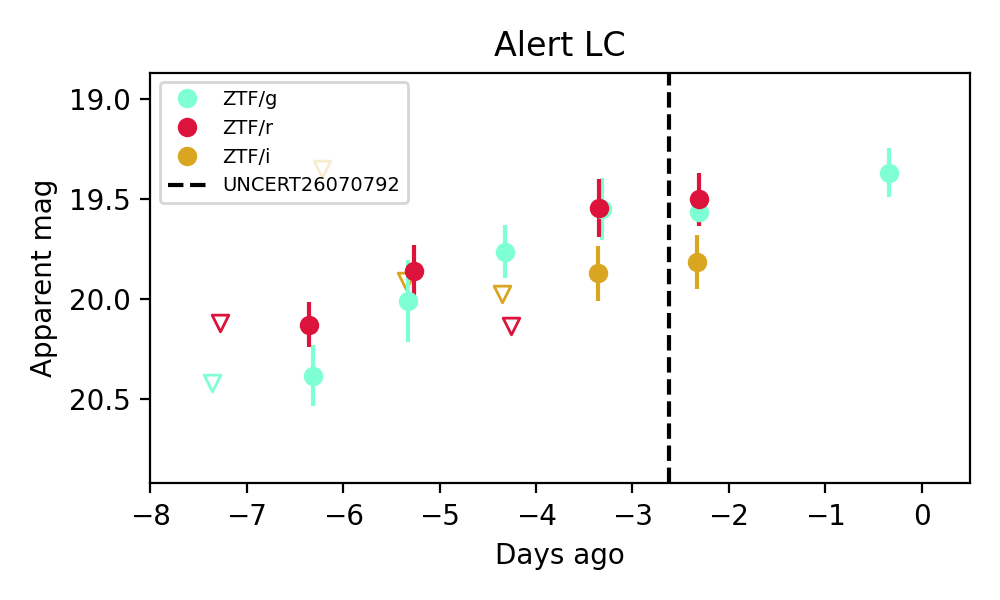
Extinction-corrected gr color:
From alerts: 0.03 +/- 0.15 mag
Extinction-corrected gi color:
From alerts: -0.3 +/- 0.15 mag
Extinction-corrected ri color:
From alerts: -0.33 +/- 0.19 mag
Consistent with synchrotron, g-r>0!
Rise Rate:
g: 0.22 mag/day
r: 0.64 mag/day
Fade Rate:
r: 0.28 mag/day
2. [ZTF] ZTF26abfaduz (Afterglow?) [Back to Top] [Share] [Trigger Swift] [Fritz Alert] [Fritz Source] [Lasair]RA, Dec: 302.46044, 13.9636 20h 9m50.51s, 13d57m48.96sGalactic (l, b): 54.59927, -10.35275 ext(g-r) = 0.275

TESS: Sectors [54 81]
PS1: 0 sources in 3 arcsec
LegacySurvey: 0 sources in 3 arcsec

Extinction-corrected gr color:
From alerts: -0.28 +/- 0.09 mag
Rise Rate:
g: 1.75 mag/day
r: 2.32 mag/day
Fade Rate:
g: 0.13 mag/day
r: 0.23 mag/day
3. [ZTF] ZTF26abfdmbq (Afterglow?) [Back to Top] [Share] [Trigger Swift] [Fritz Alert] [Fritz Source] [Lasair]RA, Dec: 255.12757, -26.74046 17h 0m30.62s, -26d-44m-25.67sGalactic (l, b): 356.19734, 9.47875 WARNING: -3.98 deg from ecliptic plane ext(g-r) = 0.247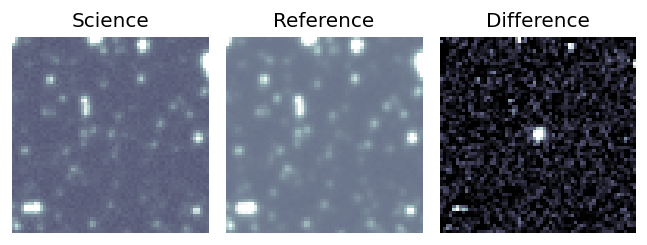
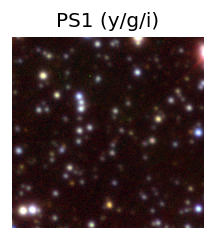
TESS: Sectors [ 91 115 116]
PS1: 1 source in 3 arcsec Closest: d = 0.61 arcsec photoz=0.54+/-0.83 peak abs mag = -25.06
LegacySurvey: 0 sources in 3 arcsec
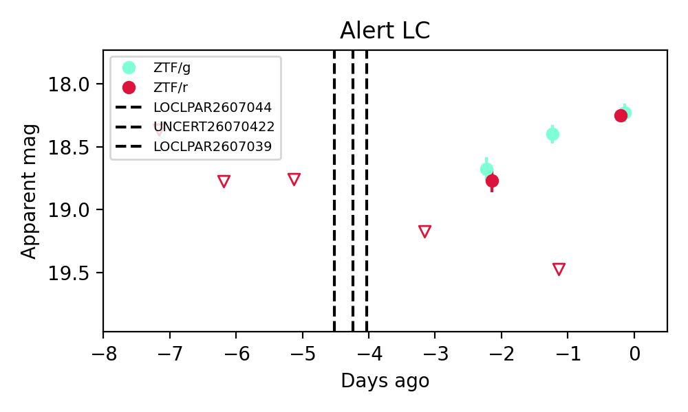
Extinction-corrected gr color:
From alerts: -0.27 +/- 0.09 mag
Rise Rate:
g: 0.21 mag/day
r: 1.3 mag/day
Fade Rate:
r: 0.7 mag/day
4. [ZTF] ZTF26abfdwcv (Afterglow?) [Back to Top] [Share] [Trigger Swift] [Fritz Alert] [Fritz Source] [Lasair]RA, Dec: 284.73854, -5.63923 18h58m57.25s, -5d-38m-21.22sGalactic (l, b): 28.75863, -4.23505 ext(g-r) = 0.572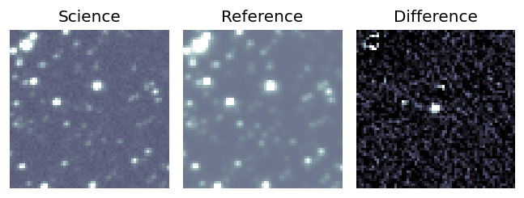
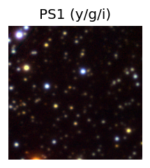
TESS: Sectors 80
PS1: 0 sources in 3 arcsec
LegacySurvey: 0 sources in 3 arcsec
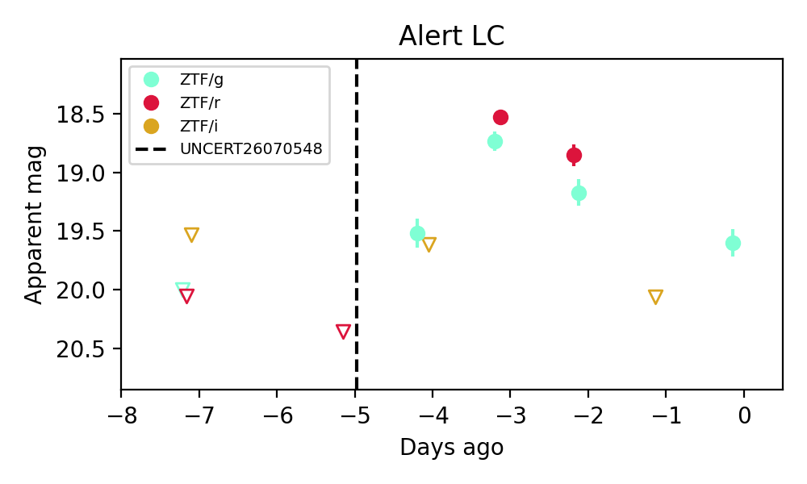
Extinction-corrected gr color:
From alerts: -0.25 +/- 0.15 mag
Extinction-corrected gi color:
From alerts: -0.97 +/- 99 mag
Rise Rate:
g: 0.31 mag/day
r: 0.9 mag/day
Fade Rate:
r: 0.34 mag/day
5. [ZTF] ZTF26abfezrd (Afterglow?) [Back to Top] [Share] [Trigger Swift] [Fritz Alert] [Fritz Source] [Lasair]RA, Dec: 322.33074, 62.75279 21h29m19.38s, 62d45m10.04sGalactic (l, b): 101.99948, 8.41642 ext(g-r) = 0.923

TESS: Sectors [ 16 17 24 56 57 58 76 77 78 83 84 85 121]
PS1: 1 source in 3 arcsec Closest: d = 5.57 arcsec photoz=0.56+/-0.17 peak abs mag = -25.36
LegacySurvey: 0 sources in 3 arcsec

Extinction-corrected gr color:
From alerts: -0.35 +/- 0.17 mag
Rise Rate:
g: 0.67 mag/day
r: 0.27 mag/day
Fade Rate:
g: 0.37 mag/day
6. [ZTF] ZTF26abfjtsz (Afterglow?) [Back to Top] [Share] [Trigger Swift] [Fritz Alert] [Fritz Source] [Lasair]RA, Dec: 292.07963, -4.13252 19h28m19.11s, -4d-7m-57.06sGalactic (l, b): 33.44032, -10.08392 ext(g-r) = 0.662

TESS: Sectors [54 81]
PS1: 0 sources in 3 arcsec
LegacySurvey: 0 sources in 3 arcsec

Extinction-corrected gr color:
From alerts: -0.03 +/- 0.21 mag
Extinction-corrected gi color:
From alerts: -0.42 +/- 0.19 mag
Extinction-corrected ri color:
From alerts: -0.39 +/- 0.17 mag
Consistent with synchrotron, g-r>0!
Rise Rate:
g: 0.04 mag/day
r: 0.83 mag/day
i: 1.15 mag/day
Fade Rate:
7. [ZTF] ZTF26abflczq (FBOT?) [Back to Top] [Share] [Trigger Swift] [Fritz Alert] [Fritz Source] [Lasair]RA, Dec: 348.73058, -5.65204 23h14m55.34s, -5d-39m-7.34sGalactic (l, b): 71.67971, -58.56009 WARNING: -0.75 deg from ecliptic plane ext(g-r) = 0.044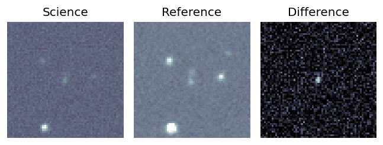
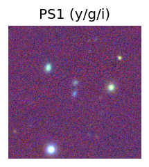
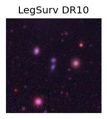
TESS: Sectors [42 92]
SDSS (<15 kpc):Found SDSS phot-z: z=0.18; peak abs mag = -20.24
PS1: 0 sources in 3 arcsec
LegacySurvey: 1 sources in 3 arcsec Closest: d = 1.06 arcsec, 162.6 deg (east of north) photoz=0.11 (68% bounds 0.08, 0.17), type=SER peak abs mag = -18.99 (68% bounds -18.32, -20.02)
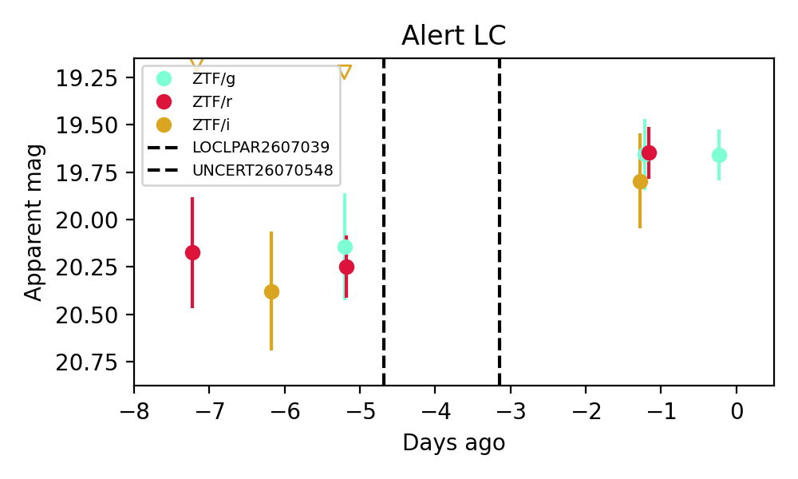
Extinction-corrected gr color:
From alerts: -0.04 +/- 0.23 mag
Extinction-corrected gi color:
From alerts: -0.21 +/- 0.31 mag
Extinction-corrected ri color:
From alerts: -0.17 +/- 0.28 mag
Extinction-corrected iz color:
From alerts: -0.72 +/- 0.06 mag
Consistent with synchrotron, g-r>0!
Rise Rate:
g: 0.07 mag/day
r: 0.12 mag/day
i: 0.42 mag/day
Fade Rate:
8. [ZTF] ZTF26abfnuzr (Afterglow?) [Back to Top] [Share] [Trigger Swift] [Fritz Alert] [Fritz Source] [Lasair]RA, Dec: 228.74032, 65.65873 15h14m57.68s, 65d39m31.44sGalactic (l, b): 102.78881, 45.45232 ext(g-r) = 0.022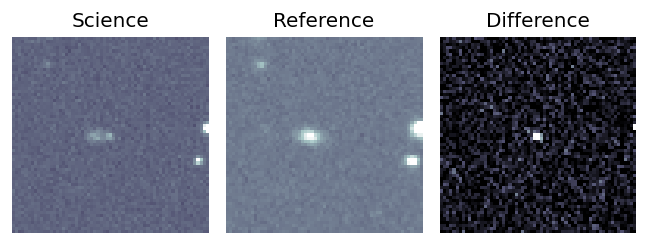
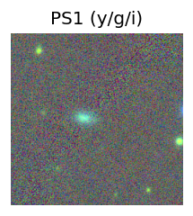
TESS: Sectors [ 14 15 16 21 23 41 48 49 50 54 57 75 76 77 81 84 120]
SDSS (<15 kpc):Found SDSS phot-z: z=0.10; peak abs mag = -18.82
PS1: 0 sources in 3 arcsec
LegacySurvey: 1 sources in 3 arcsec Closest: d = 4.44 arcsec, 88.1 deg (east of north) photoz=0.12 (68% bounds 0.08, 0.14), type=EXP peak abs mag = -19.25 (68% bounds -18.33, -19.57)
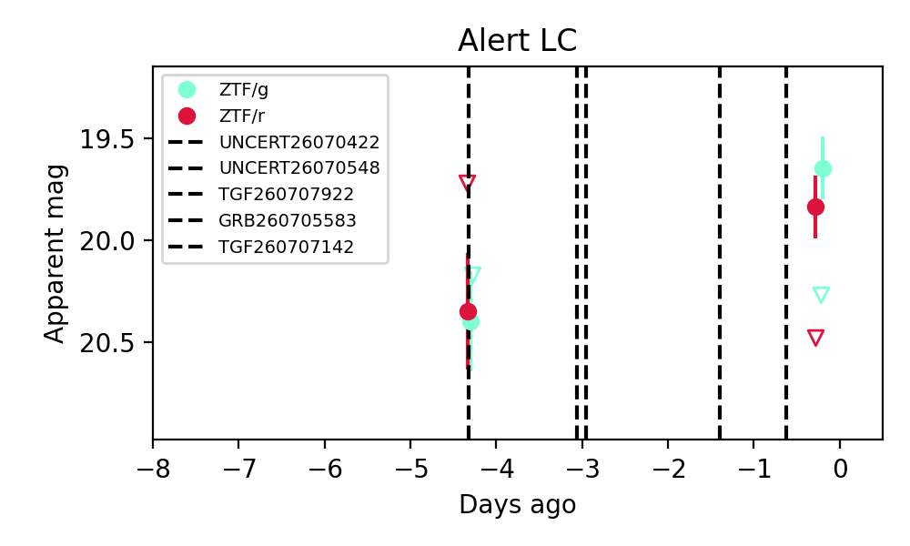
Extinction-corrected gr color:
From alerts: -0.21 +/- 0.22 mag
Consistent with synchrotron, g-r>0!
Rise Rate:
g: 34.55 mag/day
r: 0.03 mag/day
Fade Rate:
9. [ZTF] ZTF26abfoaus (FBOT?) [Back to Top] [Share] [Trigger Swift] [Fritz Alert] [Fritz Source] [Lasair]RA, Dec: 253.31858, 10.89983 16h53m16.46s, 10d53m59.40sGalactic (l, b): 29.41705, 31.13864 ext(g-r) = 0.061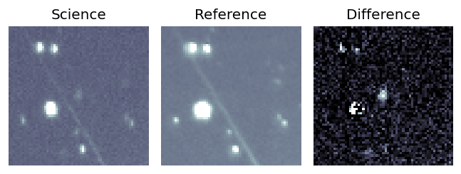
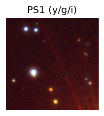
TESS: Sectors 117
PS1: 0 sources in 3 arcsec
LegacySurvey: 1 sources in 3 arcsec Closest: d = 1.21 arcsec, 230.4 deg (east of north) photoz=0.51 (68% bounds 0.11, 0.79), type=PSF peak abs mag = -22.86 (68% bounds -19.14, -23.98)
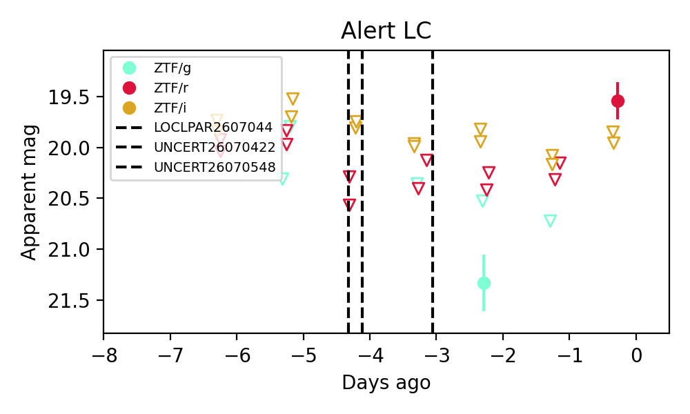
Extinction-corrected gr color:
From alerts: 0.86 +/- 99 mag
Extinction-corrected gi color:
From alerts: 1.3 +/- 99 mag
Extinction-corrected ri color:
From alerts: -0.45 +/- 99 mag
Rise Rate:
r: 0.81 mag/day
Fade Rate:
10. [ZTF] ZTF26abfocim (Afterglow?) [Back to Top] [Share] [Trigger Swift] [Fritz Alert] [Fritz Source] [Lasair]RA, Dec: 262.29768, 13.38573 17h29m11.44s, 13d23m8.62sGalactic (l, b): 36.08888, 24.18288 ext(g-r) = 0.16

TESS: Sectors [ 52 53 79 118]
PS1: 0 sources in 3 arcsec
LegacySurvey: 1 sources in 3 arcsec Closest: d = 3.31 arcsec, 240.6 deg (east of north) photoz=1.36 (68% bounds 1.19, 1.73), type=PSF peak abs mag = -25.19 (68% bounds -24.82, -25.83)

Extinction-corrected gr color:
From alerts: -0.49 +/- 0.27 mag
Extinction-corrected gi color:
From alerts: -0.73 +/- 0.31 mag
Extinction-corrected ri color:
From alerts: -0.24 +/- 0.31 mag
Consistent with synchrotron, g-r>0!
Rise Rate:
g: 0.79 mag/day
r: 0.03 mag/day
Fade Rate:
11. [ZTF] ZTF26abfoiac (Afterglow?) [Back to Top] [Share] [Trigger Swift] [Fritz Alert] [Fritz Source] [Lasair]RA, Dec: 292.29231, 41.15011 19h29m10.15s, 41d 9m0.41sGalactic (l, b): 73.76467, 10.96569 ext(g-r) = 0.126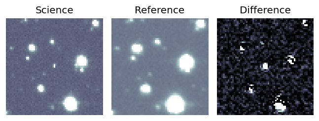
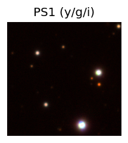
TESS: Sectors [ 14 40 41 54 55 74 75 81 82 119 120]
PS1: 0 sources in 3 arcsec
LegacySurvey: 0 sources in 3 arcsec
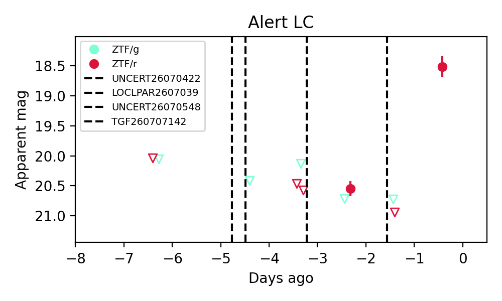
Extinction-corrected gr color:
From alerts: 0.04 +/- 99 mag
Rise Rate:
r: 2.46 mag/day
Fade Rate:
r: 0.43 mag/day
12. [ZTF] ZTF26abfowax (Afterglow?) [Back to Top] [Share] [Trigger Swift] [Fritz Alert] [Fritz Source] [Lasair]RA, Dec: 312.03434, 3.38583 20h48m8.24s, 3d23m8.98sGalactic (l, b): 50.41025, -23.9639 ext(g-r) = 0.103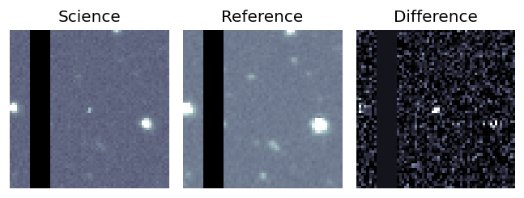
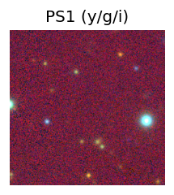
TESS: Sectors [55 81]
PS1: 0 sources in 3 arcsec
LegacySurvey: 1 sources in 3 arcsec Closest: d = 5.38 arcsec, 171.8 deg (east of north) photoz=0.87 (68% bounds 0.54, 1.37), type=PSF peak abs mag = -26.55 (68% bounds -25.31, -27.76)
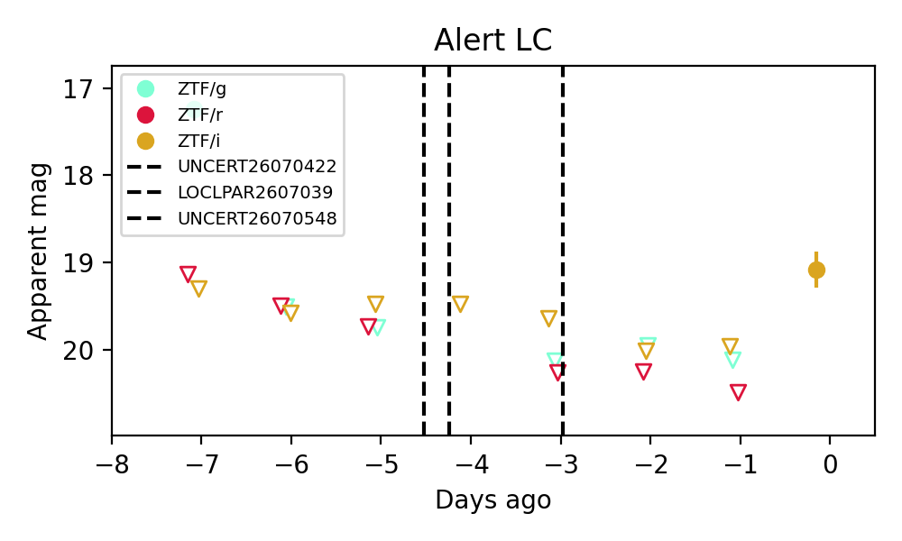
Extinction-corrected gr color:
From alerts: -2.0 +/- 99 mag
Extinction-corrected gi color:
From alerts: -2.21 +/- 99 mag
Rise Rate:
g: 2.0 mag/day
i: 0.91 mag/day
Fade Rate:
g: 2.2 mag/day
13. [ZTF] ZTF26abfpemp (FBOT?) [Back to Top] [Share] [Trigger Swift] [Fritz Alert] [Fritz Source] [Lasair]RA, Dec: 259.52913, 32.49179 17h18m6.99s, 32d29m30.45sGalactic (l, b): 55.74414, 32.83604 ext(g-r) = 0.048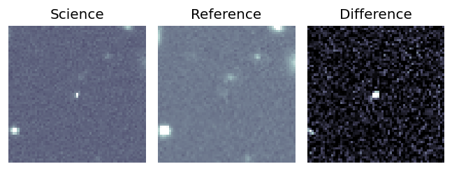
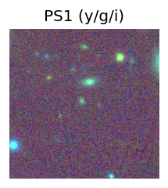
TESS: Sectors [ 25 26 52 53 117 118]
SDSS (<15 kpc):Found SDSS phot-z: z=0.36; peak abs mag = -22.15
PS1: 0 sources in 3 arcsec
LegacySurvey: 1 sources in 3 arcsec Closest: d = 1.40 arcsec, 58.5 deg (east of north) photoz=0.4 (68% bounds 0.36, 0.46), type=EXP peak abs mag = -22.26 (68% bounds -22.03, -22.63)
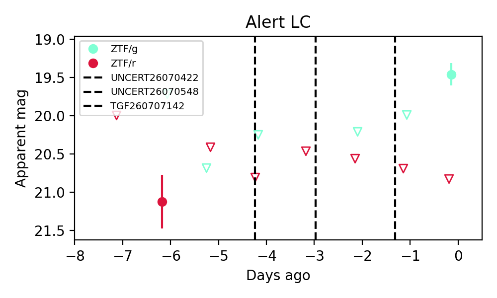
Extinction-corrected gr color:
From alerts: -1.41 +/- 99 mag
Rise Rate:
g: 0.56 mag/day
Fade Rate:
14. [ZTF] ZTF26abfpezm (FBOT?) [Back to Top] [Share] [Trigger Swift] [Fritz Alert] [Fritz Source] [Lasair]RA, Dec: 219.2892, 59.84278 14h37m9.41s, 59d50m34.02sGalactic (l, b): 101.31908, 52.6215 ext(g-r) = 0.011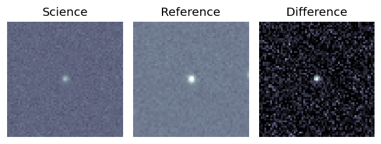
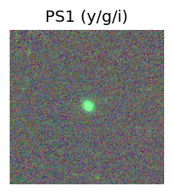
TESS: Sectors [ 15 16 22 23 48 49 50 75 76 77 121]
SDSS (<15 kpc):Found SDSS phot-z: z=0.14; peak abs mag = -19.32
PS1: 0 sources in 3 arcsec
LegacySurvey: 1 sources in 3 arcsec Closest: d = 0.22 arcsec, 238.6 deg (east of north) photoz=0.16 (68% bounds 0.14, 0.17), type=REX peak abs mag = -19.57 (68% bounds -19.3, -19.84)
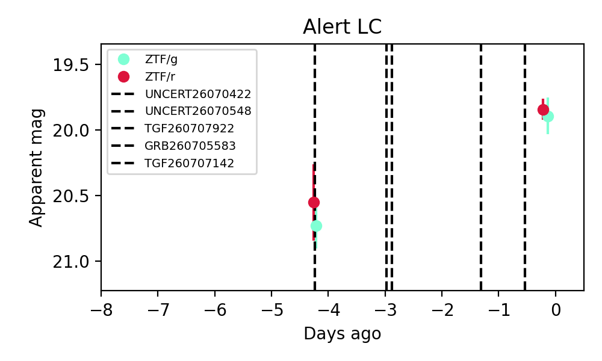
Extinction-corrected gr color:
From alerts: 0.04 +/- 0.16 mag
Consistent with synchrotron, g-r>0!
Rise Rate:
g: 0.2 mag/day
r: 0.18 mag/day
Fade Rate:
15. [ZTF] ZTF26abfpgth (FBOT?) [Back to Top] [Share] [Trigger Swift] [Fritz Alert] [Fritz Source] [Lasair]RA, Dec: 293.70409, 8.07987 19h34m48.98s, 8d 4m47.55sGalactic (l, b): 45.12024, -5.83681 ext(g-r) = 0.302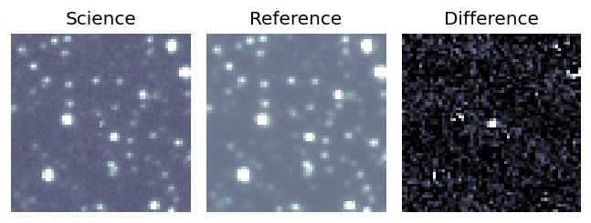
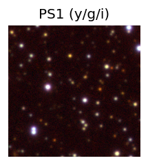
TESS: Sectors [54 81]
PS1: 1 source in 3 arcsec Closest: d = 2.30 arcsec photoz=0.38+/-0.13 peak abs mag = -23.20
LegacySurvey: 0 sources in 3 arcsec
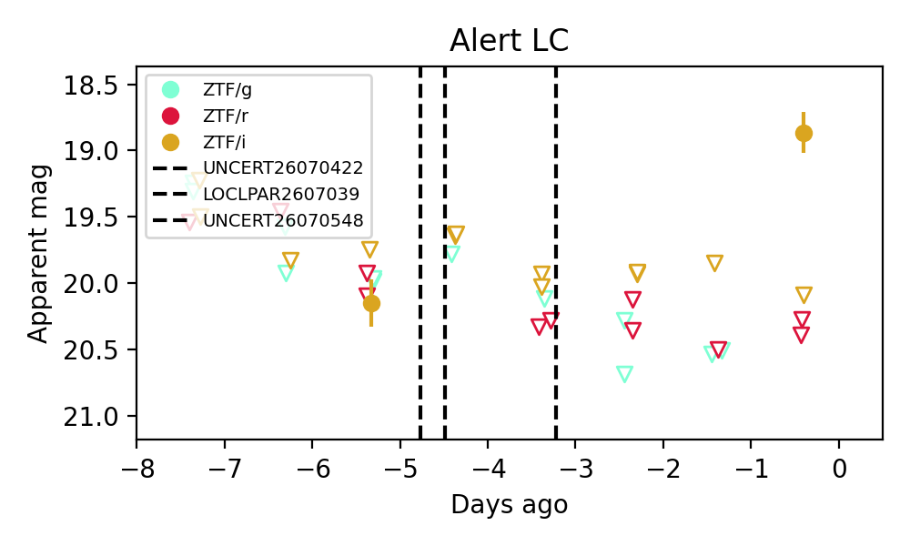
Extinction-corrected gi color:
From alerts: -0.63 +/- 99 mag
Extinction-corrected ri color:
From alerts: 1.36 +/- 99 mag
Rise Rate:
i: 0.97 mag/day
Fade Rate:
16. [ZTF] ZTF26abfpqha (Afterglow?) [Back to Top] [Share] [Trigger Swift] [Fritz Alert] [Fritz Source] [Lasair]RA, Dec: 293.21589, 44.0481 19h32m51.81s, 44d 2m53.18sGalactic (l, b): 76.71756, 11.65579 ext(g-r) = 0.136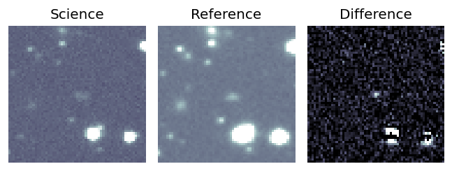
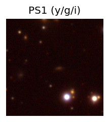
TESS: Sectors [ 14 15 40 41 54 55 74 75 81 82 119 120]
PS1: 1 source in 3 arcsec Closest: d = 2.77 arcsec photoz=0.20+/-0.02 peak abs mag = -19.94
LegacySurvey: 0 sources in 3 arcsec
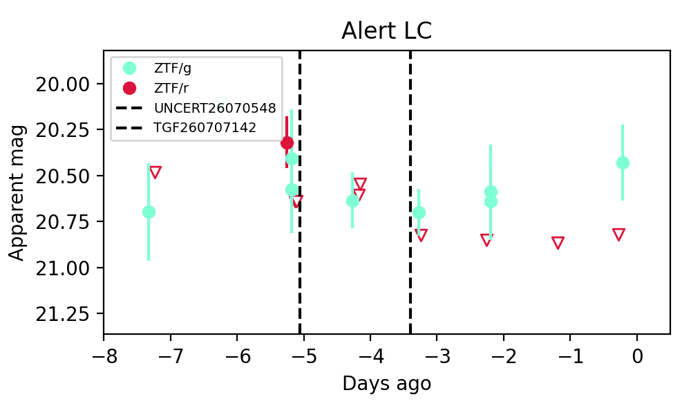
Extinction-corrected gr color:
From alerts: -0.34 +/- 99 mag
Rise Rate:
r: 0.05 mag/day
Fade Rate:
r: 2.53 mag/day